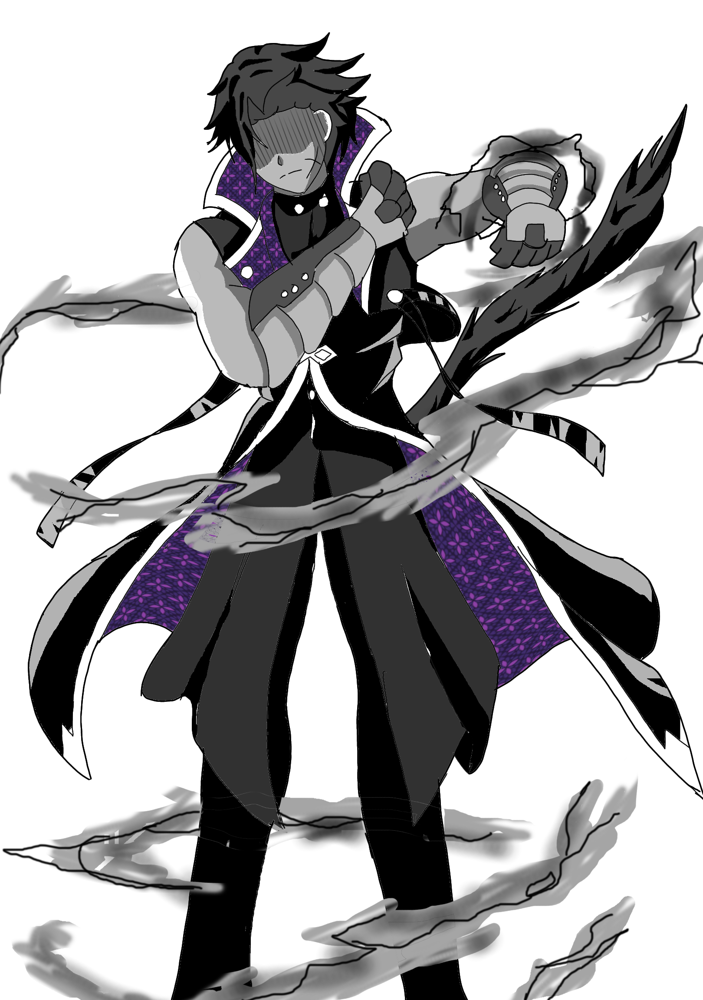

7 Kilauan Pelangi
Petualangan Zia Putri di Pandawa Akademi dimulai di sini. Bersiaplah untuk 7 kristal, 7 kesatria, dan 7 rahasia yang mengubah segalanya.
Chapter 2: Pria Petir & Buku Sihir
*Untuk suara Bahasa Indonesia terbaik, buka di Chrome Android Atau Cari Suara Indonesia
"Hey kau yang di sana menunduk!" Suara pria itu lantang dan tegas.
Aku langsung menundukkan kepala. Sekilas, aku melihat sesuatu yang sangat cepat bagaikan kilatan petir. Saat aku menengok ke belakang,

aku melihat seorang pria bertubuh tinggi dan besar berdiri tegap. Aura petir menyelimuti tubuhnya. Aku terbelalak melihatnya.
"G-gimana? Aku gak bisa bertarung! Kamu aja deh yang beresin!"
"Heh, dasar merepotkan. Tapi yasudah, itu bukan masalah buatku."
Aku hanya bisa terdiam melihat pertarungan. Pria itu sangat cepat dan kuat, tapi aku juga tahu dia mulai kewalahan melawan bayangan yang terlalu banyak. Ada bayangan hitam menyerang dari belakang. Pria itu terluka di bagian punggungnya. Itu adalah kesempatan bagi para bayangan untuk menyerang.
Tubuhku bergetar. "Bagaimana ini... aku ingin membantu, t-tapi bagaimana?"
Kunci emas di saku jaketku tiba-tiba keluar sendiri dan bersinar kembali. Tapi cahaya ini berbeda. Kemudian kunci itu mengeluarkan sebuah mantra sihir. Cahayanya terlalu terang sampai aku tidak bisa melihat apapun. Saat aku membuka mata, kunci tersebut tiba-tiba berubah menjadi sebuah buku mantra sihir.
"Hey, ayo cepat bantu aku!" Ucap pria itu.
Aku memberanikan diri membuka buku tersebut dan membacakan sebuah mantra:
"Dingin akan mengubah udara. Mengembun dan mengkristal menjadi bongkahan es!"
Aku terbelalak melihat sebuah bongkah es yang menjulang seperti gunung.
"Hebat sekali. Sekarang giliranku," ucap pria itu bersemangat.
Dia melancarkan pukulan yang bertubi-tubi ke arah bayangan hitam yang terjebak di dalam bongkah es. Serangannya cepat, pukulannya seperti kilatan petir.
"GUNTUR PENGHANCUR!!!"
Ledakan energi listrik yang sangat kuat keluar dari kepalan tangannya.
"Huh, tadi itu pertarungan yang sangat hebat. Hey, ayo tos dulu dong," ucapnya.
Sebelum kami berdua melakukan tos, tiba-tiba para anggota OSIS datang ke asrama. Aku melihat wajah yang tidak asing. Tanduk merah itu...
Anggota OSIS bertanduk merah datang. Dia musuh atau temen? Dan siapa pria petir ini? LANJUT CHAPTER 3 👇
Traktir Kopi Biar Nggak Penasaran ☕